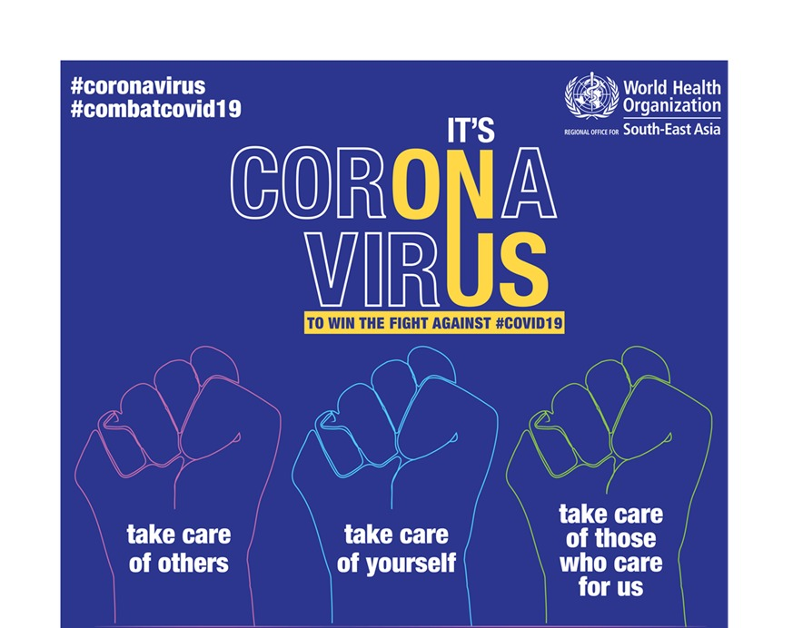

Apa itu virus corona?

Virus Corona atau severe acute respiratory syndrome coronavirus 2 (SARS-CoV-2) adalah virus yang menyerang sistem pernapasan. SARS-CoV-2 yang lebih dikenal dengan nama virus Corona ini adalah jenis baru dari coronavirus yang menular ke manusia. Penyakit karena infeksi virus ini disebut COVID-19. Pada banyak kasus, virus ini hanya menyebabkan infeksi pernapasan ringan, seperti flu. Namun, virus ini juga bisa menyebabkan infeksi pernapasan berat, seperti infeksi paru-paru (pneumonia), Middle-East Respiratory Syndrome (MERS), dan Severe Acute Respiratory Syndrome (SARS), sampai kematian.
Apa gejala umum seseorang terinfeksi virus corona ?
Gejala umum yang bisa menandakan seseorang terinfeksi virus Corona, yaitu:
- Demam (suhu tubuh di atas 38 derajat Celsius)
- Batuk
- Sesak napas
Menurut penelitian, gejala COVID-19 muncul dalam waktu 2 hari sampai 2 minggu setelah terpapar virus Corona.
Segera lakukan isolasi mandiri bila Anda mengalami gejala infeksi virus Corona (COVID-19) seperti yang disebutkan di atas, terutama jika gejala muncul 2 minggu setelah kontak dengan penderita COVID-19 atau berada di daerah yang memiliki kasus COVID-19. Setelah itu, hubungi hotline COVID-19 di 119 Ext. 9 untuk mendapatkan pengarahan lebih lanjut.
Apa penyebab seseorang tertular virus corona?
- Tidak sengaja menghirup percikan ludah (droplet) yang keluar saat penderita COVID-19 batuk atau bersin
- Memegang mulut atau hidung tanpa mencuci tangan terlebih dulu setelah menyentuh benda yang terkena cipratan ludah penderita COVID-19
- Kontak jarak dekat dengan penderita COVID-19, misalnya bersentuhan atau berjabat tangan.
Bagaimana pencegahan virus corona?
Sampai saat ini, belum ada vaksin untuk mencegah infeksi virus Corona atau COVID-19. Oleh sebab itu, cara pencegahan yang terbaik adalah dengan menghindari faktor-faktor yang bisa menyebabkan Anda terinfeksi virus ini, yaitu:
- Terapkan physical distancing, yaitu menjaga jarak minimal 1 meter dari orang lain, dan jangan dulu ke luar rumah kecuali ada keperluan mendesak.
- Gunakan masker saat beraktivitas di tempat umum atau keramaian.
- Rutin mencuci tangan dengan air dan sabun atau hand sanitizer yang mengandung alkohol minimal 60% setelah beraktivitas di luar rumah atau di tempat umum.
- Tingkatkan daya tahan tubuh dengan pola hidup sehat.
- Jangan menyentuh mata, mulut, dan hidung sebelum mencuci tangan.
- Hindari kontak dengan penderita atau orang yang dicurigai menderita COVID-19.
- Tutup mulut dan hidung dengan tisu saat batuk atau bersin, kemudian buang tisu ke tempat sampah.
- Hindari berdekatan dengan orang yang sedang sakit demam, batuk, atau pilek.
- Jaga kebersihan benda yang sering disentuh dan kebersihan lingkungan, termasuk kebersihan rumah.
 :
: